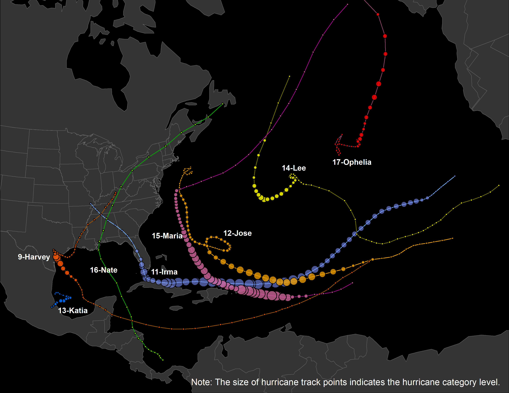

The Hurricane Story:
Examining Spatiotemporal Pattern of Twitter Trajectory in 2017 Atlantic Hurricane Season
There is an increasing risk of tropical cyclones recent years causing a large amount of loss of assets. However, the fatalities are relatively low because of effective protective actions such as getting sheltered and evacuated. A more comprehensive understanding of the evacuation behaviors will greatly benefit the management.
Post-event survey is the traditional practice to collect the information of evacuation behaviors with limitation of high cost and low efficiency, while user-generated social media data provides great potentials to better understand and detect the spatiotemporal pattern of the evacuation behaviors during natural hazards.

Map of Major Hurricanes in 2017 Atlantic Hurricane Season
Based on Twitter data collected during 2017 Atlantic Hurricane Season, we generate the evacuation trajectories of citizens in the impacted communities and visualize the movement path. In this map, the red color shows time range: The color red-yellow-blue indicates Auguest-September-October 2017.
We can easily find the two biggest clustering, which are the red trajectories (showing people's evacating routes during Hurricane Harvey in August 2017) and the yellow ones (showing the evacuating routes during Hurricane Irma in September 2017).
To better understand where are people moving from, as well as where are people moving to, we borrow the idea of wind-rose map, and draw these charts below by different state, where moving angles are the same, and the distances are proportionally decreased. The color here shows the same time information as before.
We move all these chart to the centroid of each state and make these two maps. The first map shows the origin (starting location) of each trajectory by state, and the second map shows the destination (ending location).
It is interesting to explore the result: As for origin, a large group of people were traveing from Texas towards northeast, west and even southeast; a lot of people were traveling from Florida to the north and north west, which clearly shows the evacuation pattern during the Hurricane Harvey and Irma. As for the destination, California would one of most welcome terminal, and the northeast U.S also takes a lot of evacuees.
Design & Cartography by Chenxiao (Atlas) Guo, Dec-2018